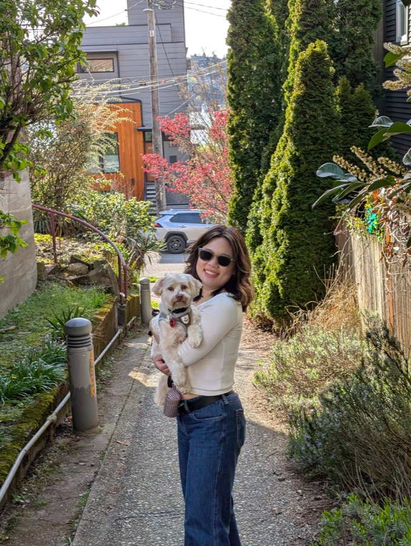
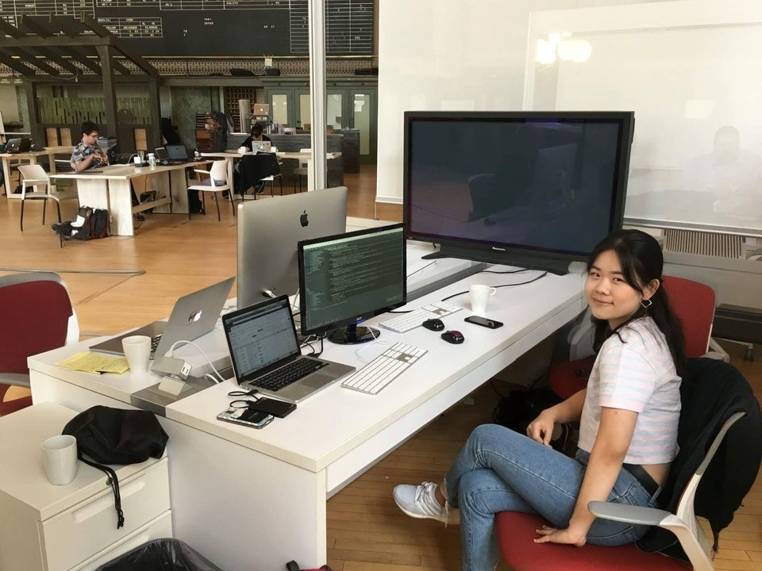
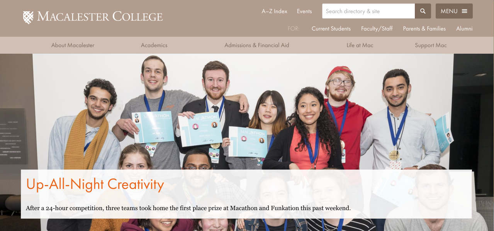
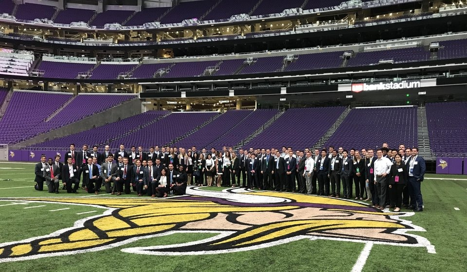
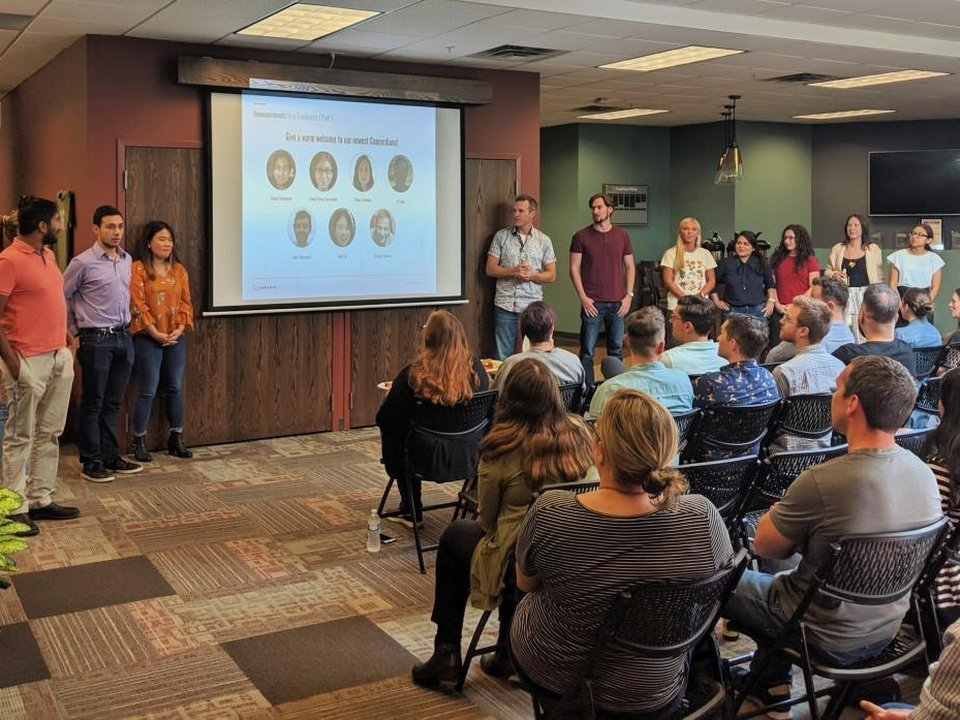
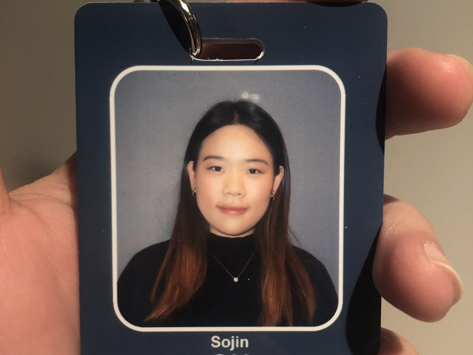
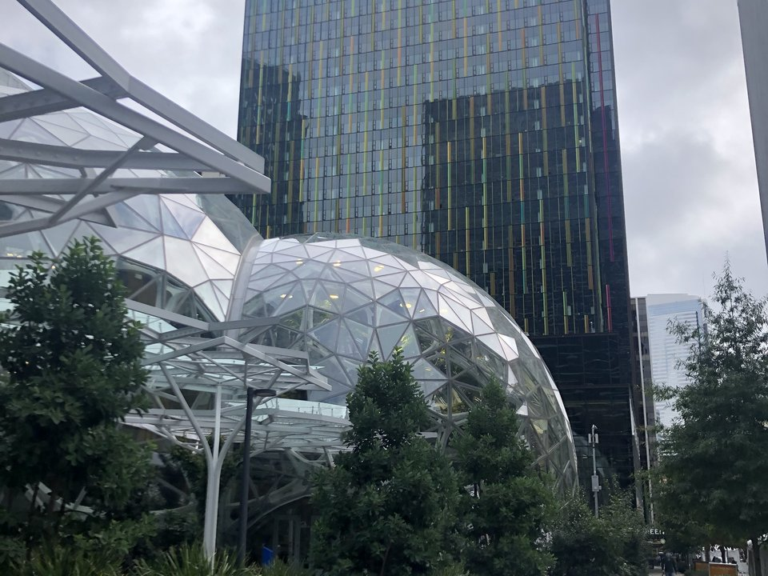
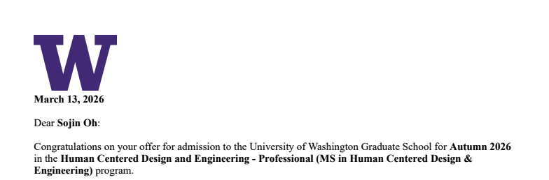

Hi, I'm Sojin! :) I grew up in South Korea, moved to the U.S. for college, and ended up staying for the opportunities that came after graduation. These days I'm based in Seattle 🌧️.
I've always thought I'd be a software engineer for life, but somewhere along the way I started caring more about who the software was actually for than the code itself.
If you want the long version, here's how I got from a cafeteria menu website in high school to a Master's in Human-Centered Design & Engineering. If you'd rather have the short version, check out At a Glance ✨.
My Journey So Far
In my senior year of high school, I was trying to decide what to major in for college. I was drawn to a handful of different things (music, physics, math), but I never thought computer science would be the one. I didn't even take my first CS class until that same senior year. What changed my mind was a project I built on the side while learning to code. I noticed the English-speaking teachers at my school packing lunch from home every day, because the cafeteria menu was posted only in Korean and they had no way to know what was being served. I taught myself just enough HTML, JavaScript, and Google's Image Search API over two weeks to build a small site that matched a photo to each day's menu item instead of trying to translate the text (direct translation was hopeless, one dish translated literally to "six times"). One of my teachers told me she checked the site every morning before deciding whether to pack lunch.

It was such a small fix to such a small problem, but it was the first time I understood that access to information (even something as ordinary as a cafeteria menu) directly shapes whether someone has a real choice at all. That idea is what pointed me toward computer science in the first place, not the code itself, but what the code could clear out of someone's way.
In college, that same instinct (just go build the thing) turned into two summers' worth of internships, plus a hackathon project on the side. The first internship was at a small company building a website for the USDA that helps people look up nutrition facts about food, the kind of site dietitians and researchers actually use. The hackathon project, Beacon, was an app a teammate and I built to send your location to 911 in an emergency.


The next summer, I worked at a financial firm, pulling public company filings into a big internal database and building a small tool so the company could manage employee accounts more easily. I liked that job fine, but looking back, I noticed something I'd carry forward. I lit up a lot more on the days I got to build a tool someone would actually use, and a lot less on the days I was just moving and cleaning up data behind the scenes. I didn't think much of it at the time, but it turned out to be the first thread of something I'd spend years pulling on.

My first job out of college put me on a small consulting team as a MuleSoft developer, building REST APIs and data integration pipelines that connected systems like SAP and Salesforce. The most memorable part was a trip to Canada for one client, where I sat in on real business meetings and translated what a company actually needed into an integration we could build.


The longer I did that work, the clearer it became what I actually loved about it, and what I didn't. I loved writing the code and solving the problem right in front of me. I liked the data-wrangling side of the job a lot less. I wanted to be closer to building the software itself, not just connecting other people's software together, and that's what sent me looking for a job that was purely software engineering.
During six years as a software engineer on Amazon's Silk browser, I helped shape how millions of people browse the web on Fire TV, shipping features like browsing history and autocomplete. The most meaningful part was never the launch itself but what came after. Reading user feedback, noticing patterns in usage metrics, and testing the browser on my own TV at home as a real user would made me realize that even small decisions could have outsized impacts. For a long time, that felt like enough.

Then came a home screen refresh, a new layout with rotating background images that triggered a web search when you clicked one, built to drive up search volume inside the app. I understood the business case, but it didn't match how people actually used the browser, and the inconsistent cursor behavior and limited text editing customers complained about every day stayed untouched, because fixing them wouldn't move that one number. As an engineer, I could build almost anything I was asked to build, but I had very little say in deciding what was worth building in the first place. That gap between the work and the why behind it is what sent me looking at graduate programs in human-centered design, somewhere I could actually study the "why" instead of just executing the "how."
That feeling is what I carried into my application to a Master's program in Human-Centered Design and Engineering at the University of Washington. Getting in felt less like a sudden pivot and more like the next obvious step, so I gave my notice at Amazon not long after. Six years in, with nothing certain waiting on the other side, but easily one of the proudest decisions I've made.

Since then, I've finished a certificate program in UX design to get some real grounding before school starts, and I've spent the months since building my own design portfolio, including this very site.
I'm excited to start the program and actually be in the design space, learning the things I only got to brush up against on the side until now.
Anyway, feel free to look through some of the projects mentioned along the way under Projects.